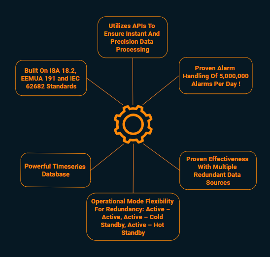
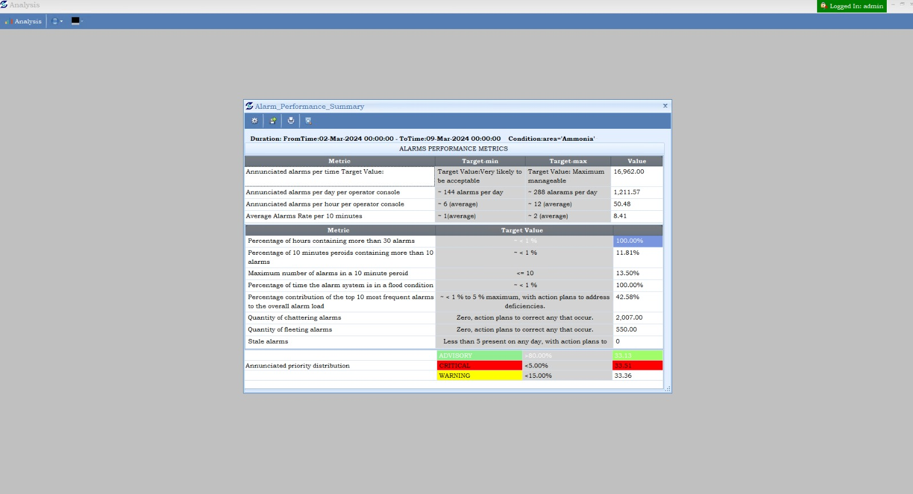
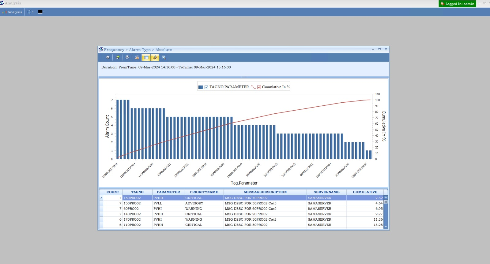
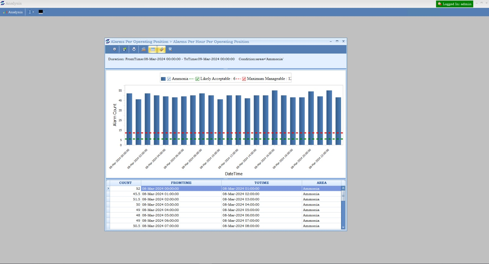

<section class="tile1">
    <div class="container">
        <div class="body" id="alrm-info-mgnt">
            <h3 data-aos="fade-up">ALARM INFORMATION MANAGEMENT</h3>
            <div class="row">
                <div class="col-xl-6 col-lg-6 col-md-12 col-xs-12" data-aos="fade-up">
                    <h5>Powerful Alarm Server That Is:</h5>
                    <div class="topology">
                        
                        <!-- <div class="diagram-container">
                            <div class="central-node">
                                
                            </div>
                    
                            <div class="connector connector1"></div>
                            <div class="connector connector2"></div>
                            <div class="connector connector3"></div>
                            <div class="connector connector4"></div>
                            <div class="connector connector5"></div>
                            <div class="connector connector6"></div>

                            <div class="node node1">
                                <span class="border-animated">Built On ISA 18.2, EEMUA 191 and IEC 62682 Standards</span>
                            </div>
                            <div class="node node2">Utilizes APIs To Ensure Instant And Precision Data Processing</div>
                            <div class="node node3">Proven Alarm Handling Of 5,000,000 Alarms Per Day!</div>
                            <div class="node node4">Proven Effectiveness With Multiple Redundant Data Sources</div>
                            <div class="node node5">Operational Mode Flexibility For Redundancy: Active – Active, Active – Cold Standby, Active – Hot Standby</div>   
                            <div class="node node6">Powerful Timeseries Database</div>        
                        </div> -->
                    </div>
                </div> 
                <div class="features col-xl-6 col-lg-6 col-md-12 col-xs-12" data-aos="fade-up">
                    <h5 class="">Features</h5>
                    <ul class="circle-checkmark">
                        <li>Connectivity Protocol: OPC UA, Classic OPC, ODBC, Files, Printing, Other Data Sources</li>
                        <li>Connectivity Provision For Upto 16 Channels</li>
                        <li>SNMP Trap Provision For System Health Monitoring</li>
                        <li>Redundant Connectivity Option</li>
                        <li>Database Backup And Cleanup Options</li>
                        <li>Multi User - Multi Window Client View</li>
                        <li>Suppression Filter Option</li>
                        <li>Complete and Expansive Selection Of Alarm Analysis Per ISA 18.2 Standards, EEMUA 191 Metrics And IEC 62682</li>
                        <li>Highly Interactive Trends To Get The Exact Details </li>
                    </ul>
                </div>
                <div class="alarms-slide">
                    <div class="swiper" #swiperContainer1 data-aos="zoom-in">
                        <div class="swiper-wrapper">
                          <div class="swiper-slide">
                            
                          </div>
                          <div class="swiper-slide">
                            
                          </div>
                          <div class="swiper-slide">
                            
                          </div>     
                        </div>
                    </div>
                </div>           
            </div>
        </div>
        <div class="body" id="alrm-alerts">
            <h3 data-aos="fade-up">Alarm Alerts</h3>
            <div class="row">
                <div class="col-12" data-aos="fade-up">
                    <div class="">
                        <ul class="arrow-checkmark">
                            <li>Data Source: Data Historian, Alarm Server (AE Or DA Data)</li>
                            <li>Unique DA/AE Converter To Convert Process Data to Alarm Data</li>
                            <li>Schema Builder With Logic Options (AND, OR, XOR, NOR Etc) For Logical Processing Of Alarms</li>
                            <li>User, Multi User Or User Groups Or Area Based Alerts Transmission With Escalation Matrix</li>
                            <li>Alerts Options: SMS, E-mail, Speakers, Dial In/Out, Digital Outs</li>
                            <li>Send SMS By Physical Modem Or Web Based Gateway Options</li>
                            <li>Send E-mail Via SMTP Or Web Based Gateway Options</li>
                        </ul>
                    </div>
                </div> 
            </div>
        </div>
        <div class="body" id="alrm-rationalization">
            <h3 data-aos="fade-up">ALARM RATIONALIZATION</h3>
            <div class="row rationalization">
                <div class="col-12" data-aos="fade-up">
                    <h5>Our Rationalization Tool Is Built For The Following Purpose:</h5>
                    <div class="">
                        <ul class="arrow-checkmark">
                            <li>Ensure consistency in alarm and trip point settings for similar equipment</li>
                            <li>Ensure correct priority is calculated for alarms</li>
                            <li>Correct misconfigured settings</li>
                            <li>Correct alarm setting for nuisance/chattering alarms</li>
                            <li>Remove duplicate alarms</li>
                            <li>Reduce configured alarms to reduce alarm load</li>
                            <li>Aid in state based, multi process mode alarm systems</li>
                            <li>Audit and enforce</li>
                        </ul>
                    </div>
                </div> 
                <div class="features col-12" data-aos="fade-up">
                    <h5 class="">Features</h5>
                    <ul class="circle-checkmark">
                        <li>Specially Designed And Built Master Alarm Database (MADB) That Handles I/O Details Including Alarm Limits, Set Points, Engineering Units Etc</li>
                        <li>Generation Of Discrepancy List To Analyze Current Value Vs Design Value</li>
                        <li>Priority Assist Definition By Combining Safety, Environmental And Financial Consequences</li>
                    </ul>
                </div>
            </div>
        </div>

            
    </div>
</section>